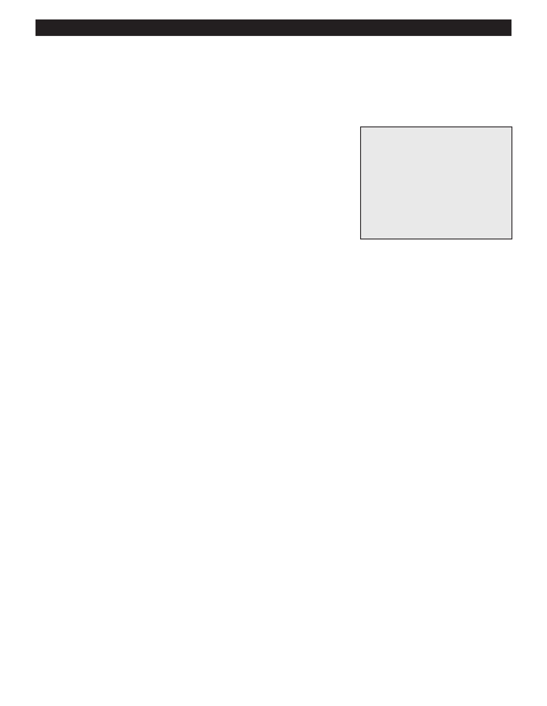

PA RT I C I PA N T R E S O U R C E G U I D E
Testing and Replacing a Built-in Switch
If you suspect that the built-in switch of an incandescent light fixture may be bad, test it
for continuity. Then, if the switch proves to be faulty, replace it with a new one.
Safety
Tools and Materials Needed
Make sure the power is off before you remove the fixture.
New built-in switch with the
Use lockout/tagout procedures.
same ratings as the old one
Lockout/tagout device
Use insulated tools.
Continuity tester or multimeter
Wear eye protection and rubber-soled shoes. Remove jewelry.
Insulated screwdriver
Be careful using a ladder.
Masking tape
Pen
Support the fixture as you remove it. Don’t let any parts on fall on you.
Notes:
62